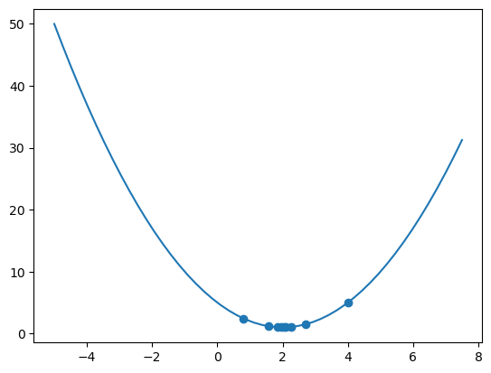
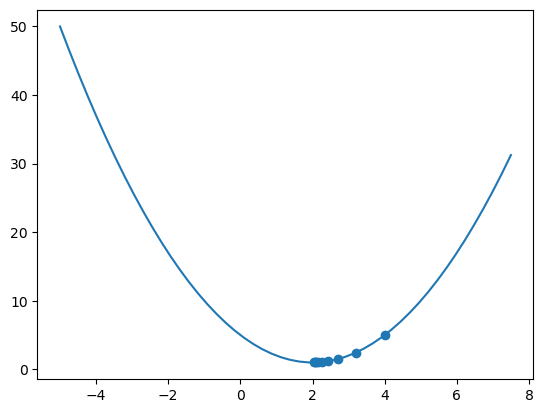
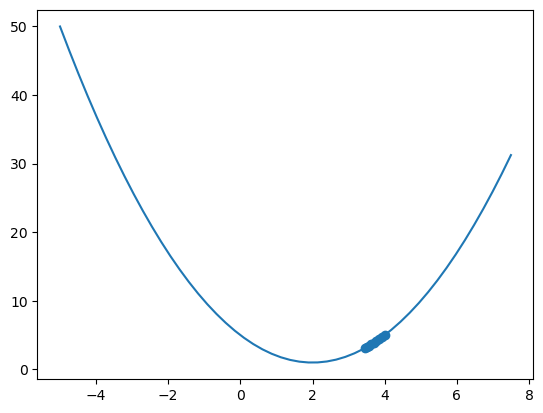

Autosaving every 20 seconds컵 8개 중 차가 먼저 들어간 컵이4 우유가 먼저 들어간 컵이 4라고 하자.
예시 - 1 4개중 3개 맞힘
- A는 차가 먼저 들어갔는지,우유가 먼저 들어갔는지 매우 잘 구분하는 특별한 사람인가?
1. 귀무가설 설정
- A는 잘 구분하지 못하는 일반적인 사람이다
2. 데이터 수집&관측 및 검정통계량 계산
동일하게, 컵 8개 중 차가 먼저 들어간 컵이4 우유가 먼저 들어간 컵이 4라고 하자.
수집한 데이터
- A는 차가 먼저 들어간 컵 4개 중 3개를 맞히고 하나만 틀림!
- 검정통계량을 차가 먼저 들어간 컵의 갯수로 정했을때 \(n = 3\)이다.
3. P-value 계산
\[ \begin{aligned} P-value &= P(\text{귀무가설 하에서 관측한 검정통계량}) + P(\text{귀무가설 하에서 더 극단적인 경우가 나올 확률})\\ &= P(\text{귀무가설 하에서 n=3}) + P(\text{귀무가설 하에서 n} > 3) \\ &= \frac{{{4}\choose{3}}{{4}\choose{1}}}{{8\choose4}} + \frac{{{4}\choose{4}}{4\choose0}}{{8\choose4}} \\ &= \frac{4 \times 4}{70} + \frac{1\times1}{70}\\ &= \frac{17}{70} \end{aligned} \]
- \(n>3\)보다 극단적인 경우는 4보다 없음.
4. P-value와 유의수준을 비교
- 헷갈림 포인트
- P_value는 관측한 값보다 극단적인 경우들의 확률, 내 data가 얼마나 일반적인지 알려줌
- P_value는 부호가 헷갈림
\[\text{P_value}= 0.2428 > 0.05\]
5. 기각여부 결정
유의수준 0.05일 때 p-value가 0.05보다 크므로 귀무가설을 기각하지 못한다. 즉,A는 보통사람이다!
예시 - 1 20개 중 10개 맞힘
- 동일한 문제,A는 차와 우유 중 어느 것이 먼저 들어갔는지 아는 사람인가?
1. 귀무가설 설정
- A는 그냥 일반적인 사람이다. 어느게 먼저 들어갔는지 알지 못한다.
2. 데이터 수집&관측 및 검정통계량 계산
- 이번에는 20개중 10개는 차를 먼저, 20개중 10개는 우유를 먼저 따랐다고 하자.
- 수집한 데이터
- A는 10개 중 8개를 맞히고 2개를 틀림!
- 검정통계량을 차가 먼저 들어간 잔을 맞힌 갯수라 했을때, \(n = 8\)이다.
3. P-value 계산
(이론적 계산)
\[ \begin{aligned} P-value &= P(\text{귀무가설 하에서 관측한 검정통계량}) + P(\text{귀무가설 하에서 더 극단적인 경우가 나올 확률})\\ &= P(\text{귀무가설 하에서 n=8}) + P(\text{귀무가설 하에서 n} > 8) \\ &= P(\text{귀무가설 하에서 n=8}) + P(\text{귀무가설 하에서 n} = 9) + P(\text{귀무가설 하에서 n} = 10)\\ &= \frac{{{10}\choose{8}}{{10}\choose{2}}}{{20\choose10}} + \frac{{{10}\choose{9}}{10\choose1}}{{20\choose10}} + \frac{{10\choose10}{{10\choose0}}}{{20\choose10}}\\ \end{aligned} \]
(경험적 계산)
- 컵이 20개 10개는 차먼저, 10개는 우유먼저.
- 귀무가설 하에서 \(n\)의 분포는?(i.e. A가 차먼저 우유먼저인지 판단할 수 없을때 \(n\)의 분포는?)
array([1., 1., 1., 1., 1., 1., 1., 1., 1., 1., 0., 0., 0., 0., 0., 0., 0.,
0., 0., 0.])4. P-value와 유의수준을 비교
\[\text{P_value}= 0.2428 > 0.05\]
5. 기각여부 결정
- 유의수준 0.05일 때 p-value가 0.05보다 크므로 귀무가설을 기각하지 못한다. 즉,A는 보통사람이다!
예시 - 쇼핑몰 알고리즘의 개선
온라인 쇼핑몰을 운영하는 회사가 2020년 매달에 임의로 1000명의 고객에 대하여 접속 기록을 분석하여 접속 후 장바구니에 상품을 저장했던 고객이 평균적으로 540명인 것을 알고있다.
2021년 1월부터 고객이 장바구니를 선택하는 절차를 개선한 알고리즘을 새롭게 개발하고 온라인 쇼핑몰의 운용에 적용하였다.
2021년 1월부터 10월까지 매월 임의로 1000명의 고객에 대하여 접속 기록을 분석하여 접속 후 장바구니에 상품을 저장했던 평균 고객 수가 620 명으로 늘어난 사실을 확인하였다.
쇼핑몰의 알고리즘 개선 후 늘어난 장바구니 사용 회수가 유의한 증가(significant increase)인지 아닌지 판단해보자.
참고 온라인 쇼핑몰을 이용해 보았다면 장버구니에 상품을 저장했더라고 구매를 하지 않는 경우도 많다는 것에 유의하자. 하지만 관심있는 상품을 장바구니에 담기 쉽고 장바구니 안에서 선택한 상품들의 관리와 선택이 편리하다면 구매로 이어질 가능성이 클 것이다.
1. 귀무가설 설정
- “2021년 장바구니 평균 이용율과 2020년의 평균 이용율은 같다.”가 귀무가설이다.
- 즉,2021년 장바구니 평균 이용율을 \(p\)라 하면 귀무가설은 아래와 같다.
\[ H_0 : p = 0.54\]
데이터 수집&관측 및 검정통계량 계산
- 2020년 1000명 중 540 \(\to\) 2021년 1000명 중 620임을 관찰했다.
- 장바구니 평균 고객수 X = 620를 검정통계량으로 하자.
3.3 P-value 계산
- 귀무가설하에서 평균 고객수의 분포는 어떻게 될까?
- 한 명의 고객이 장바구니를 이용할 확률이 \(p = 0.54\)이며
- 각각의 고객이 장바구니의 이용여부가 독립이라고 할 때
\[X \sim Binomial\]
w = 4
alpha = 0.8
def gradient_update(w,alpha,repeat=10):
w_list = []
loss_list = []
for i in range(1,repeat):
w_list.append(w);loss_list.append(loss(w))
print(f"w_{i} = ",w)
print("loss:",loss(w))
w = w - alpha * grad(w)
return w_list,loss_list
def plot_Error():
w_list = np.linspace(-5,7.5)
loss_list = [loss(w) for w in w_list]
plt.plot(w_list,loss_list)w_1 = 4
loss: 5
w_2 = 0.7999999999999998
loss: 2.4400000000000004
w_3 = 2.72
loss: 1.5184000000000002
w_4 = 1.5679999999999998
loss: 1.1866240000000001
w_5 = 2.2592
loss: 1.06718464
w_6 = 1.8444800000000001
loss: 1.0241864703999999
w_7 = 2.093312
loss: 1.008707129344
w_8 = 1.9440127999999999
loss: 1.00313456656384
w_9 = 2.03359232
loss: 1.0011284439629824
w_1 = 4
loss: 5
w_2 = 3.2
loss: 2.4400000000000004
w_3 = 2.72
loss: 1.5184000000000002
w_4 = 2.432
loss: 1.186624
w_5 = 2.2592
loss: 1.06718464
w_6 = 2.15552
loss: 1.0241864704
w_7 = 2.093312
loss: 1.008707129344
w_8 = 2.0559872
loss: 1.00313456656384
w_9 = 2.03359232
loss: 1.0011284439629824
w_1 = 4
loss: 5
w_2 = 3.92
loss: 4.6864
w_3 = 3.8432
loss: 4.3973862399999994
w_4 = 3.769472
loss: 4.131031158783999
w_5 = 3.6986931199999997
loss: 3.8855583159353335
w_6 = 3.6307453952
loss: 3.659330543966004
w_7 = 3.565515579392
loss: 3.45083902931907
w_8 = 3.5028949562163203
loss: 3.2586932494204555
w_9 = 3.4427791579676676
loss: 3.081611698665892